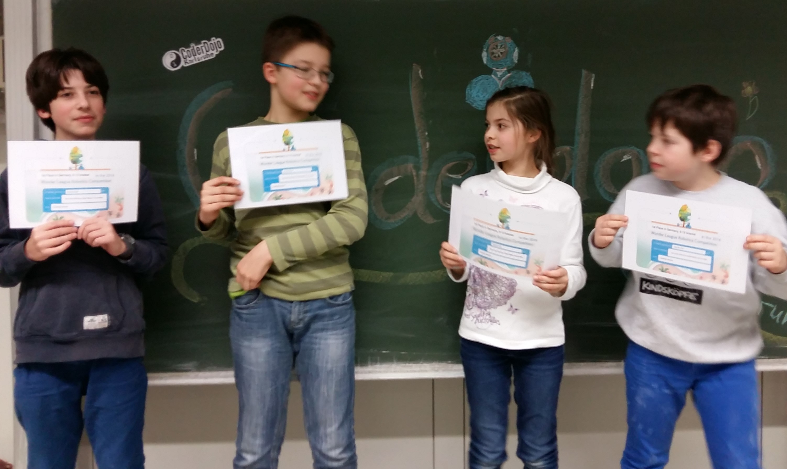
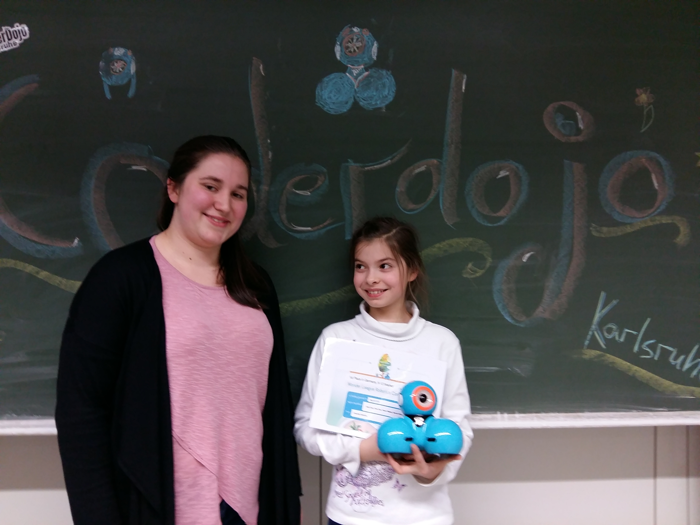

Dash and Dot Science Journal
February 1st, 2017
King A.R.T.O.R, Germany
Hi Everyone,I am Olivia, nine years old and attending junior high school in Karlsruhe. The rest of the King ARTOR team members did not want to continue due to school commitments. We are all at the same grade, because I skipped two grades and very busy too, but I will have to find time for Dash and Dot by setting up my priorities like missing the piano lessons! They are so nice to play with and I would like to have one! It is also easier for me to understand the website, because I am bilingual. When I grow up I will build robots. I am learning to program in CoderDojo Karlsruhe almost for a year now.
Here we go Dash and Dot!

And what about the first day?

Red and Green
My mentor Ricarda (she is so nice) brought Dash and Dot to me in the afternoon, just after school. I laid out the mat on the floor and started to program Dash.Dash will go to the first cup and see if Dot is there.
Dash turns green when it detects Dot and red when it does not.
After completing its mission, Dash will go to the second cup.
Dash went through couple of cm away and did not continue after the second cup!
I also forgot to program the stop block.
Will have to start over.
I discovered my mistake when I explained my program and found other possibilities to improve it.

At Home, programming alone in February 1st
At the end:
It is late and I am not done as yet!Dear Diary, who said it will take only a day?
I will work it out next week.

Thank you for your support.
Ricarda Dash and I Dot
This is my mentor Ricarda. She studies physics in KIT.Thank you for your support.
February 10th, 2017
There's a second day too!

Meeting at the CoderDojo
At the Coderdojo I built a platform from Legoblocks for the balls. My mentor forgot to bring the two balls with.I made two paperballs instead.
Then I programmed Dash to carry the ball and throw them off one by one to each cup. Unfortunately, it didn't work without the funnel. That means, I still need to work on my platform.
I hope that's not much work. By the time I got home from CoderDojo it was very late in the evening and I haven't had dinner or done my homework!
I will build something better over the weekend and I hope that my mentor will remember to bring the balls!
Paperballs are heavier than ping pong balls and they do not roll well.
It was too loud at the CoderDojo to make a movie.
We will meet at home again.
At the end:
Am I done? Definitely not. But I am getting there.Dear Diary, I must adjust it just a little bit.
The idea of blocking each ball with Lego is working.
I will build a funnel, because balls are bigger!
February 19th, 2017
This is where I live: Karlsruhe
I spend the weekend working on my website.Mum and I went to the Palace Park to make a short movie about our town today and took few pictures.
The weather was still very cold and there were people heading for a football game to support their club, because there is also a stadion within the park.
Did you know that Karlsruhe has an American Football Club?
The park is beautiful. It even has a small lokomotiv!
Its lake froze this year and I skated there.
I hope you will like my town.

View from the Palace Tower

Karl Drais Day and Natural History Museum
Bilingual Junior High and College
And how about the movie I made today?

February 20th, 2017
Today Dash didn't recognise Dot - What a pity!
Dash behaved silly and kept running away. Are they not supposed to be friends? I did not program it like that. Moreover, the battery was empty after one hour and charging took too long. I had to take a break. I intended to finish today, because I already lost two weeks at the beginning of this mission waiting for my team to decide! This is not going according to my plans!

At the end:
Dear Diary, I did not achieve my goal today! I must invest more time in this! And I must do my homework now!February 22nd, 2017
I must prepare for a piano concert tomorrow evening. This week I did not practice any piano. I skipped French drama classes, tennis, Chinese lessons and lots of other things. I cannot miss the concert, because I am playing the piano!
It was a tiring week. But I am happier today than yesterday, because I made it!
One of the cup is tipped over, but the ball went in.YES! I planted the trees and they will grow for the baby pandas!
Plant the trees and let them grow!
February 23rd, 2017
Show time!
It is amazing how much I learned on this mission.I worked on my programming skills, build another website this time in English and learned to be patience.
It was a lot of work and I would like to win and tell good night to Dash and Dot every evening!
Bamboos can grow very fast over night.
At the end:
I will plant more trees for the baby pandas.February 24th, 2017
The end
I came a little bit earlier so I had more time in the Coderdojo, prepared the setting so Dot was in the middle and got on with my work. I know my videos aren't perfect, but I'm only nine years old and I gave my best.